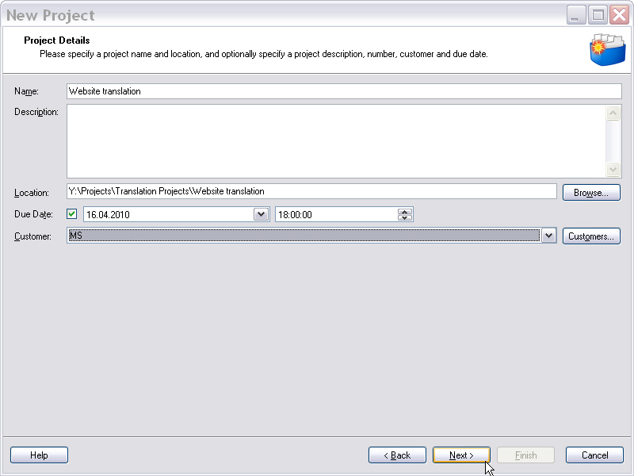
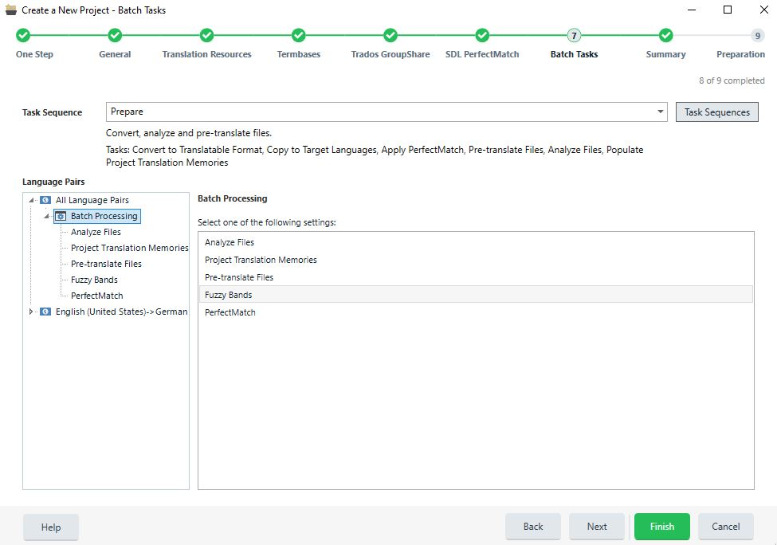

Creating projects
Trados Studio also allows you to create projects, which is often done by project managers, who assign tasks to translators, editors, etc. Translators can also create projects to process multiple files (e.g. 100 HTML files that make up a website) more easily instead of opening all files one by one.
In addition to opening single files for processing, users can also create projects. This is useful, for example, when:
- A translator needs to process multiple files (e.g. several dozen HTML files). This is more efficient than opening each file one by one.
- A project manager wants to prepare multiple files for translation into one or several target languages and wants to assign tasks to different users (e.g. English, French, Spanish translators, and editors).
Project creation is fully wizard-based. The user can select, among other things, the following main project parameters:
- Project name
- Due date
- Files
- Target language(s)
- Translation memories and termbases
The project files are processed in what is called a task sequence. A task sequence comprises multiple single tasks such as word count, file analysis, etc. The most important single task is probably the one that converts the native documents into the intermediary format (e.g. SDLXliff). This is a pre-requisite for any subsequent task, as files cannot be translated, analyzed, etc. in Trados Studio without prior conversion to the intermediate format.

Entering general project information in the project wizard.

Applying a batch task sequence to all project files.